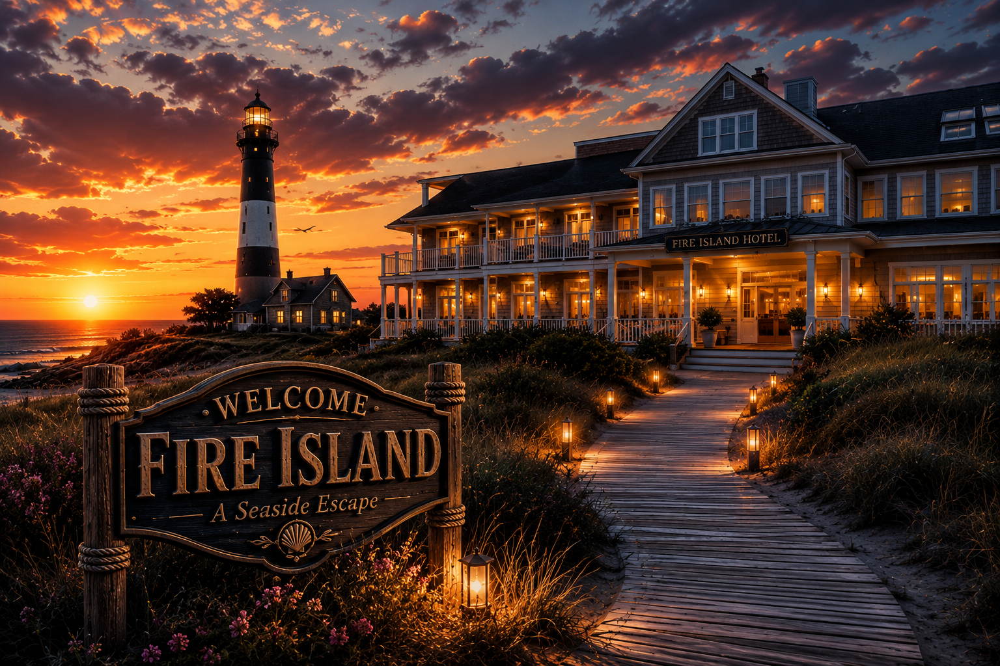
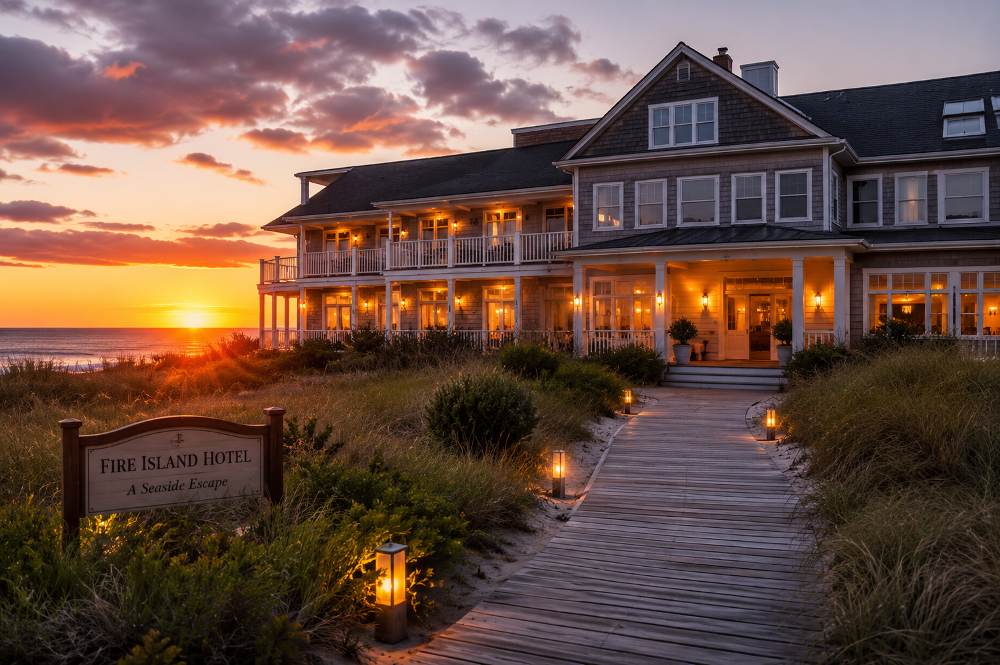

Adventures in Fire Island

Why Fire Island Inspired Me
Fire Island reminded me to appreciate nature. Watching the waves roll onto the shore and exploring peaceful trails helped me disconnect from stress and enjoy the beauty of the outdoors. I learned that travel is not just about seeing new places but about seeing the world with new eyes.
Gallery: Fire Island
-
Lighthouse View
A beautiful historic landmark on the coast.
-
The Beach
Relaxing waves hitting the sandy shore.
-
Wooded Trail
Walking through the quiet paths and trees.
-
Island View From Above
An amazing high perspective of the whole area.
-

Local Stay
A nice little place close to the water.
Explore The Adventure!
Visit Fire Island and discover its beaches, wildlife, and natural beauty for yourself.
Plan your Fire Island adventure today!Favourite Activities
• Walking along the beach
• Exploring nature trails
• Bird watching
• Photography
What I Learned
This trip taught me the importance of taking time to explore, relax and appreciate the natural beauty around us.
Travel Tips
1. Bring sunscreen
2. Wear comfortable walking shoes
3. Carry a camera for amazing photos
4. Stay hydrated during hikes